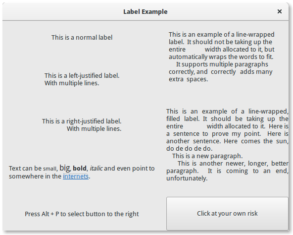

6. Label¶
Os rótulos são o principal método de colocar texto não editável nas janelas, por exemplo, para colocar um título ao lado de um widget Gtk.Entry. Você pode especificar o texto no construtor, ou mais tarde com os métodos Gtk.Label.set_text() ou Gtk.Label.set_markup().
A largura da etiqueta será ajustada automaticamente. Você pode produzir rótulos de várias linhas colocando as quebras de linha (“\n”) na sequência de rótulos.
Os rótulos podem ser feitos selecionáveis com Gtk.Label.set_selectable(). Rótulos selecionáveis permitem que o usuário copie o conteúdo do rótulo para a área de transferência. Somente os rótulos que contêm informações úteis para copiar, como mensagens de erro, devem ser selecionáveis.
O texto do rótulo pode ser justificado usando o método Gtk.Label.set_justify(). O widget também é capaz de quebra automática de palavras, que pode ser ativado com Gtk.Label.set_line_wrap().
Gtk.Label suporta algumas formatações simples, por exemplo, permitindo que você crie algum texto em negrito, colorido ou maior. Você pode fazer isso fornecendo uma string para Gtk.Label.set_markup(), usando a sintaxe de marcação do Pango [1]. Por exemplo, <b>texto em negrito</b> e <s>texto tachado</s>. Além disso, Gtk.Label suporta hiperlinks clicáveis. A marcação para links é emprestada do HTML, usando os atributos a com href e title. O GTK+ renderiza links semelhantes ao modo como aparecem nos navegadores da web, com texto colorido e sublinhado. O atributo de título é exibido como uma dica de ferramenta no link.
label.set_markup("Go to <a href=\"http://www.gtk.org\" "
"title=\"Our website\">GTK+ website</a> for more")
Os rótulos podem conter mnemônicos. Os mnemônicos são caracteres sublinhados no rótulo, usados para navegação pelo teclado. Os mnemônicos são criados fornecendo uma string com um sublinhado antes do caractere mnemônico, como “_File”, para as funções Gtk.Label.new_with_mnemonic() ou Gtk.Label.set_text_with_mnemonic(). Os mnemônicos ativam automaticamente qualquer widget ativável em que o rótulo esteja dentro, como um Gtk.Button; se o rótulo não estiver dentro do widget de destino do mnemônico, você deve informar o rótulo sobre o destino usando Gtk.Label.set_mnemonic_widget().
6.1. Exemplo¶
1 2 3 4 5 6 7 8 9 10 11 12 13 14 15 16 17 18 19 20 21 22 23 24 25 26 27 28 29 30 31 32 33 34 35 36 37 38 39 40 41 42 43 44 45 46 47 48 49 50 51 52 53 54 55 56 57 58 59 60 61 62 63 64 65 66 67 68 69 70 71 72 73 74 75 76 77 78 79 | import gi
gi.require_version('Gtk', '3.0')
from gi.repository import Gtk
class LabelWindow(Gtk.Window):
def __init__(self):
Gtk.Window.__init__(self, title="Label Example")
hbox = Gtk.Box(spacing=10)
hbox.set_homogeneous(False)
vbox_left = Gtk.Box(orientation=Gtk.Orientation.VERTICAL, spacing=10)
vbox_left.set_homogeneous(False)
vbox_right = Gtk.Box(orientation=Gtk.Orientation.VERTICAL, spacing=10)
vbox_right.set_homogeneous(False)
hbox.pack_start(vbox_left, True, True, 0)
hbox.pack_start(vbox_right, True, True, 0)
label = Gtk.Label("This is a normal label")
vbox_left.pack_start(label, True, True, 0)
label = Gtk.Label()
label.set_text("This is a left-justified label.\nWith multiple lines.")
label.set_justify(Gtk.Justification.LEFT)
vbox_left.pack_start(label, True, True, 0)
label = Gtk.Label(
"This is a right-justified label.\nWith multiple lines.")
label.set_justify(Gtk.Justification.RIGHT)
vbox_left.pack_start(label, True, True, 0)
label = Gtk.Label("This is an example of a line-wrapped label. It "
"should not be taking up the entire "
"width allocated to it, but automatically "
"wraps the words to fit.\n"
" It supports multiple paragraphs correctly, "
"and correctly adds "
"many extra spaces. ")
label.set_line_wrap(True)
vbox_right.pack_start(label, True, True, 0)
label = Gtk.Label("This is an example of a line-wrapped, filled label. "
"It should be taking "
"up the entire width allocated to it. "
"Here is a sentence to prove "
"my point. Here is another sentence. "
"Here comes the sun, do de do de do.\n"
" This is a new paragraph.\n"
" This is another newer, longer, better "
"paragraph. It is coming to an end, "
"unfortunately.")
label.set_line_wrap(True)
label.set_justify(Gtk.Justification.FILL)
vbox_right.pack_start(label, True, True, 0)
label = Gtk.Label()
label.set_markup("Text can be <small>small</small>, <big>big</big>, "
"<b>bold</b>, <i>italic</i> and even point to "
"somewhere in the <a href=\"http://www.gtk.org\" "
"title=\"Click to find out more\">internets</a>.")
label.set_line_wrap(True)
vbox_left.pack_start(label, True, True, 0)
label = Gtk.Label.new_with_mnemonic(
"_Press Alt + P to select button to the right")
vbox_left.pack_start(label, True, True, 0)
label.set_selectable(True)
button = Gtk.Button(label="Click at your own risk")
label.set_mnemonic_widget(button)
vbox_right.pack_start(button, True, True, 0)
self.add(hbox)
window = LabelWindow()
window.connect("destroy", Gtk.main_quit)
window.show_all()
Gtk.main()
|
| [1] | Pango Markup Syntax, http://developer.gnome.org/pango/stable/PangoMarkupFormat.html |